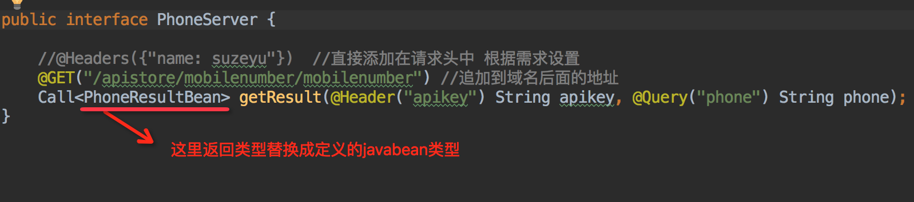
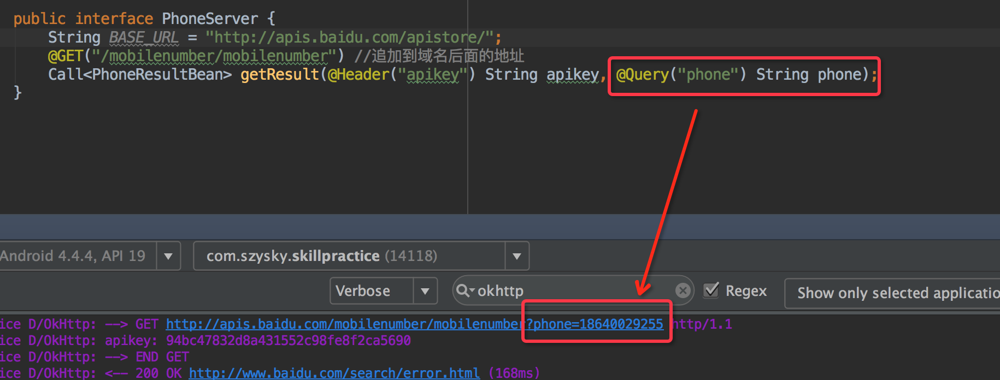
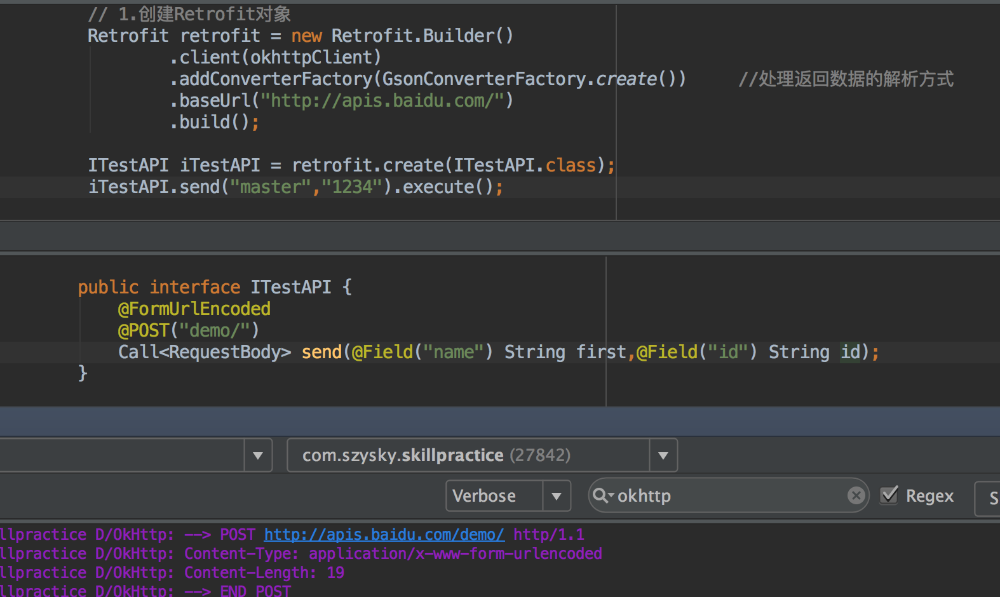

体验RESTFul风格的请求, Retrofit
简介
Retrofit出自Square公司. 是一个基于RESTFul风格的网络请求库. 关于RESTFul风格,就是不同的请求操作通过在域名之后追加不同字段来区分.相对于服务器每一个请求都对应一个文件夹或者文件. 对同一个接口增删改查充分发挥对一个文件的PUT, POST, DELETE, GET.
1.Retrofit的快速使用
这里针对的Retrofit2.0说明.在Retrofit2.0中是内部依赖于OkHttp,已经导入OkHttp3,所以不需要再如Retrofit1.x中需要额外导入okhttp.
首先添加网络权限这个必须的
<uses-permission android:name="android.permission.INTERNET"/>
添加Gradle依赖
在app/build.gradle文件中dependencies{}添加依赖. Retrofit官网,可查看最新版本
compile 'com.squareup.retrofit2:retrofit:2.0.1'
创建Api请求接口
在Retrofit中每一个请求都会对应一个Interface接口. 进行网络请求的时候通过传入我们自定义的接口.class来实现不同的网络请求.
假设我们需要请求的API为完整形式为:
https://api.github.com/repos/square/retrofit/contributors
其中square和retrofit可变参数. 那么我们可以这样定义请求接口.
创建一个IAPIGitHub接口
public interface IAPIGitHub {
@GET("repos/{owner}/{repo}/contributors")
Call<ResponseBody> send(@Path("owner") String owner,@Path("repo") String repo);
}
首先注解@GET就是表示get请求方式.其中参数追加的字符串为域名后面的需要拼接的地址.这里需要注意可以直接放入一个完整路径,如果你不是很了解,那么请注意一定不要在参数字符串首位以/斜杠开始这里后面会详细说明.
在请求地址注解的参数中如果有需要动态设置的变量那么这个变量用{}括起来. 在下面的抽象方法的形参中,使用@Path注解声明在使用的时候动态传入,@Path注解中的参数必须要与@GET注解路径中的花括号括起来的一一对应. 这样才能知道以后传入的参数对应的是哪一个.
创建Retrofit并发送请求
创建实例
Retrofit retrofit = new Retrofit.Builder()
.baseUrl("https://api.github.com/")
.build();
baseUrl就是域名, 会拼接之后API接口的地址. 这里注意baseUrl中的地址最好是以/斜杠结尾.后面会说明.
//传入之前创建的API接口的class文件,创建接口对象
GitHubApi repo = retrofit.create(IAPIGitHub.class);
//调用API的抽象放方法, 生成请求对象
Call<ResponseBody> call = repo.send(mUserName, mRepo);
//调用enqueue,采用异步方式请求
call.enqueue(new Callback<ResponseBody>() {
@Override
public void onResponse(Call<ResponseBody> call, Response<ResponseBody> response) {
//网络请求返回的结果
String result = response.body().string();
}
@Override
public void onFailure(Call<ResponseBody> call, Throwable t) {}
});
如果想取消一个操作的
call.cancel();
到此一个简单的请求就结束了. 接下来看一看Retrofit的不一样的地方.
2.网络请求log
只需要添加日志拦截器,我们就可以取出从请求到结束的所有信息,包括请求头,请求体,响应头,响应体.
添加Gradle依赖
因为Retrofit与日log拦截独立,所以需要我们手动导入.
compile 'com.squareup.okhttp3:logging-interceptor:3.4.1'
实例化我们自己的OkHttp实例
我们知道Retrofit2.0是基于OkHttp的封装. 那么也就可以在实例化Retrofit得时候传入我们自己定义的OkHttp实例.
因为日志拦截是OkHttp的功能. 如下
//创建okhttp的日志拦截器
OkHttpClient okhttpClient = new OkHttpClient();
//只有在debug调试环境中才会显示过滤日志
if (BuildConfig.DEBUG) {
HttpLoggingInterceptor logging = new HttpLoggingInterceptor();
logging.setLevel(HttpLoggingInterceptor.Level.BODY);
okhttpClient = okhttpClient.newBuilder().addInterceptor(logging).build();
}
然后在我们创建Retrofit实例的时候添加上我们自定义的okhttp
Retrofit retrofit = new Retrofit.Builder()
.client(okhttpClient)
.baseUrl("https://api.github.com/")
.build();
看一些过滤的结果:
注意我这里使用的是百度API一个查询手机号归属地的接口. 免费API接口地址. 可以注册一下用这个测试.

在上面的setLevel中. 传入了一个HttpLoggingInterceptor.Level.BODY,这里还有两个属性
- Level.BODY: 一个完整的日志过滤,从发送请求到接收响应.
- Level.BASIC: 只有最基本的请求地址信息.
- Level.HEADERS:部分完整, 不包含response响应体.
3.Convert转换器
在上面我们在接收response响应的时候是默认的ResponseBody对象, 返回的是一个json字符串. 但是在创建Retrofit的时候我们可以添加转换器. 例如,把之前返回的json字符串直接在response响应的时候转成我们需要的对象类型!!
以下是Retrofit中convert支持的类型.

下面演示使用GSON转换器的例子:
1.添加Gradle依赖
上面给出了多种支持类型,这里主要添加的转换类型依赖包必须和Retrofit依赖的版本一致!!
compile 'com.squareup.retrofit2:converter-gson:2.0.1'
2.创建Javabean对象,并创建API请求接口
这里还是以之前查询手机归属地的API说明.
创建接口返回json字符串的javabean对象.
然后创建一个API请求所对应的请求接口. 大体和之前默认基本相似,看下图
然后创建Retrofit对象,这里要注意加上addConverterFactory(GsonConverterFactory.create()),如下

然后就如同上面步骤一样. 加载API接口class,调用接口抽象方法, 调用enqueue使请求入队.
不同之处.在callback的response回调用,response.body()返回的就是一个之前定义请求接口的指定的泛型,我们的javabean对象.
注意:
- 当解析发生错误时: 在结果不能被解析的情况下，response.body()会返回null 这里需要特别处理
- 当请求响应码(这里指最初的请求,并不是服务器接口内部自定义的响应码)为404,403等. response也会被回调,在
response.errorBody().string()中可以获取错误信息
4.@URL组合和@Path
上面说过在使用baseurl地址最好以/结尾, 而接口地址追加最好不用/开头. 这里说说原因
Retrofit2.0中对于baseUrl和@URL的拼接,是根据路径的不同何以组合多种. 如下
- String BASE_URL =
http://apis.baidu.com/apistore/;这句表示域名下的名字叫apistore的文件夹 - String BASE_URL =
http://apis.baidu.com/apistore;这样会报错!! baseUrl不能指定为一个文件 - String BASE_URL =
http://apis.baidu.com/;和下面一样效果, 估计对域名会自动判断分隔符,没有加上,有就不处理 - String BASE_URL =
http://apis.baidu.com;
所以总结下来关于baseUrl最好以/结尾, 可以指向一个文件夹,但不能指向一个文件.
接下来看看@GET,@POST,PUT…,注解中写的的拼接地址与baseUrl的组合效果.
其实就是后续追加的如果是/开始那么就表示绝对路径,根目录下(域名地址). 反之那么就表示相对路径,只是追加在baseUrl的后面.
在开发中我们经常用的就是指定基础域名已/结尾. 拼接地址通常用相对路径,不用/开头.
其实上面再@Get("xxxxx/xxxx")这种形式相当于如下
@GET()
Call<RequestBody> send(@Url String urlStr);
可以看出没有什么区别,实际场景如何使用按照需求.
那么如果我们知道一整个完整路径,但是中间的某一个为动态的应该怎么做? 这里就可以利用@Path
例如这样 http://apis.baidu.com/xxx/demo 这里的xxx可能为dev也可能为master. 需要动态传入
各个场景使用不同的方法, 还是看自家服务器的接口来定什么样的请求吧.
5.添加请求头
利用@Headrs添加一组字符串请求头,如下
6.Get请求
在前面的例子中,演示的是get请求方式,例如:
单一参数请求
这里请求的路径: http://apis.baidu.com/mobilenumber/mobilenumber
因为在定义接口使用了@Query注解,所以请求后的变成了http://apis.baidu.com/mobilenumber/mobilenumber?phone=xxxx
@Query: 用来进行如网页表单查询时,在域名?进行的追加的键值对值. 当我们准备发送请求的时候就会填入键值对key对应的value值,这里相当于上面的手机号码.
多个参数请求
你可能也已经发现了,如果表单的键值对有许多,比如5对,那么如果使用上面@Query注解,在定义请求接口的时候就需要定义5个形参,而实际调用的时候就需要传入5个参数!!这明显不符合代码编写规范. 所以square又给我们一种方式解决此类问题@QueryMap
QueryMap: 声明一个map集合,key和value都是String. 在使用的时候只需传入一个map集合,内部会遍历出来追加到请求地址后面. 看下面演示.

7.Post请求
关于get和post的请求我们应该清楚,get只能在拼接请求地址.而post既可以拼接地址,也可以在请求体里面发送内容.而请求体里面写入的内容就不再像get请求拼接那样局限性很高. 我们可以在请求体里面放入表单键值对, 图像二进制, json字符串…
@FormUrlEncoded
- 用
@FormUrlEncoded注解来发送表单数据 - 用
@Field注解和参数来指定每个表单项的Key，value为参数的值
代码如下:
用Charles对app进行抓包查看请求头的信息,如下:

我们看到在AS的控制台中Content-Length: 19 就是指name=master&id=1234这些内容19个字节. 所以其实也就是HTTP协议中POST请求Content-Type: application/x-www-form-urlencoded类型的方式.
@Multipart
@Multipart注解来发送Multipart数据
@Part注解来定义需要发送的文件
@Multipart
@PUT("/user/photo")
User updateUser(@Part("photo") TypedFile photo, @Part("description") TypedString description);
8.拦截器Interceptor
在之前的log日志过滤其实就是使用了拦截器. 不过拦截器对象添加了Retrofit为我们提供现成的log日志拦截器.
我们可以自己创建一个Interceptor,如下
OkHttpClient client = new OkHttpClient();
client.interceptors().add(new Interceptor() {
@Override
public Response intercept(Chain chain) throws IOException {
Response response = chain.proceed(chain.request());
// Do anything with response here
return response; //一定不要返回null,会直接抛出异常
}
});
然后在创建Retrofit的builder链式调用添加到client()中.